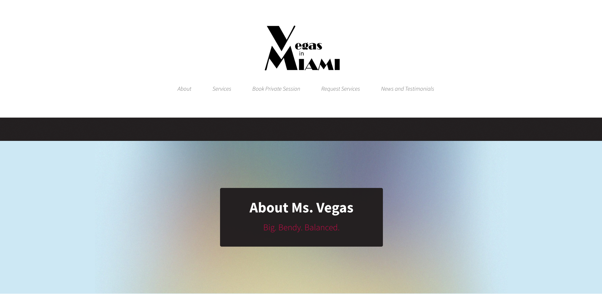

Vegas in Miami
Small Business Website
This website was built for Ms. Vegas, former America's Got Talent contestant, and entrepreneur in Miami. It was designed to market her services, collect request for bookings, and allow her to create, update and delete information for the website. To meet the requirement of marketing services, I created a single page application with React that uses hooks, event handlers, and fetch requests to access information from an API backend. To allow Ms. Vegas to create, update, and delete the information, I built the API backend with Rails and used the ActiveAdmin gem to create an admin dashboard. ActiveAdmin handles the authentication and authorization to make sure the information is secure. Although we have now implemented a button to connect to Acuity for scheduling, I originally wrote a form so that clients could request specific bookings without having to create an account using the booking request forms. When a form was filled out for a specific appointment (available time-slots are added using the admin dashboard), on submit the form is emailed using formspree and also a fetch request is used to change the appoint status from available to requested. The rails controller for the time-slots only render those that are available to prevent multiple clients from requesting the same time-slot. This feature can still be seen in the demo video. The Request Services form still serves as an example of a form that requests information from the API, but only triggers a formspree email without a post reqest to the API.
Live Website
Frontend Github Repository
Backend Github Repository
Video Demo